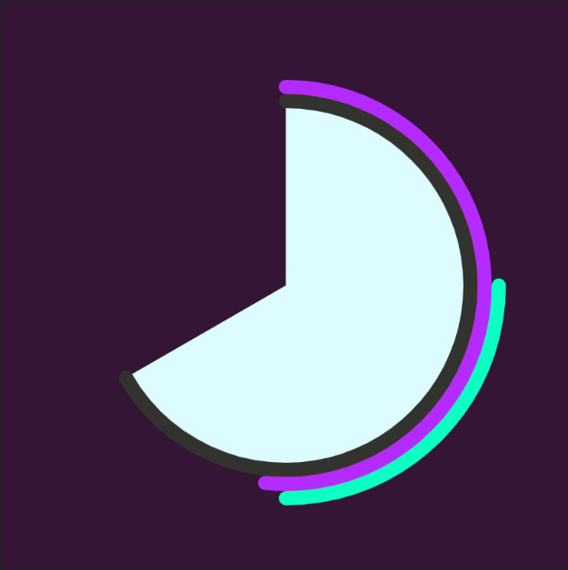
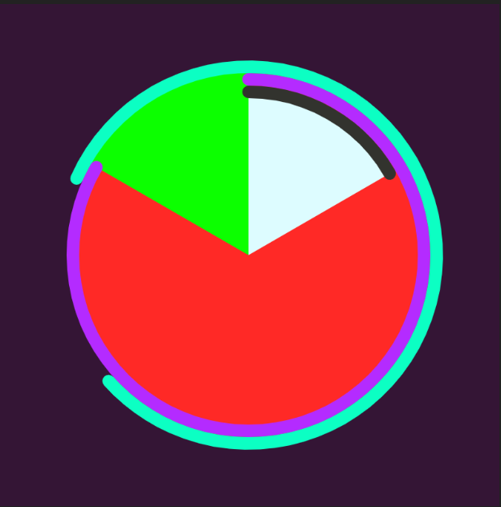

Juan Moreno - Project 3
Exercise 5
For this exercise we were required to translate Exercise 3 into P5.js sketch, and to add three new commands. For this exercise in particular I added a command that made certain balls a different/solid color through the use of colorMode command. Another command added was filter(INVERT); which changes the overall color the images I added and gives them a nice white inverted color. The last one was a text display that says “Space is Vast.”
Click here for Exercise 5see code
Project 3
The overall clock was made through the use of arcs and other commands taught to us in class that keep track of time. The seconds bar is the cyan colored arc and its fill displays a different color with each passing second (achieved with colorMode). It begins small but it expands around the clock, once the arc connects, 60 seconds have gone by. The purple arc with a red fill displays minutes and the black arc with a white fill displays hours (their fill however, doesn’t change color.) During P.M hours a green turquoise color is displayed and during A.M hours a purple background is displayed. I was going to have them display different images but I had some issues with that.
Click here for Project 3see code
 
8:30AM---AND---2:50AM